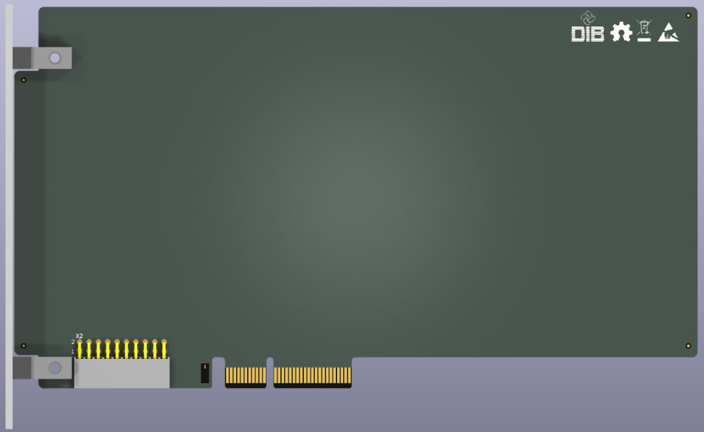

This project template is the basis for creating the EEZ DIB2 peripheral module for the open source BB3+ T&M chassis.
The DIB2 specification is available at https://www.envox.eu/eez-dib/eez-dib-specification/ and more information about EEZ BB3+ at https://www.envox.eu/eez-bb3plus/
We also recommend that you install the latest KiCad library with the components used, which is available at https://github.com/eez-open/eez-kicad-libraries
License: CC-BY-SA-4.0
